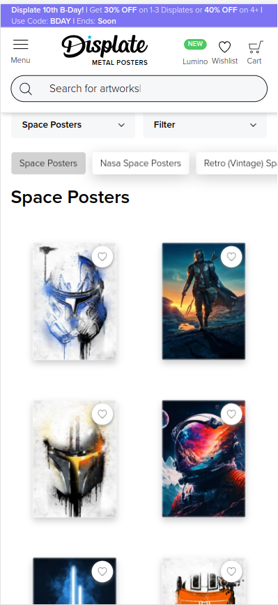

Hick's law
Hick's Law states that the more pieces a user has to interact with, the longer it will take for them to come to a decision. Google does a great job on their homepage of filtering down the number of things a user can interact with. Google can do a lot of things from email to file management and so much more, but they have always made sure that if a user has a question this page keeps it simple and easy to search for an answer!
Contrast
Nike
nike.comNike does a great job on their site of contrasting. As seen in the image above, all the backgrounds are light colors, with a dark text color and dark backgrounds on the photos so that everything is very easily visible. They also do a great job of contrast in colorblind modes because of this because of the limited range of other colors making the experience for all users as similar as possible.
Repitition
Displate
displate.com
Displate demonstrates a solid repitition on their products page. Despite having many items that are needed to be displayed across any search, the layout will remain the same. The products are evenly displayed and clicking on each of them takes you to the details page for that product. There aren't suprise redirects or popups that hinder this repitition in the layouts.